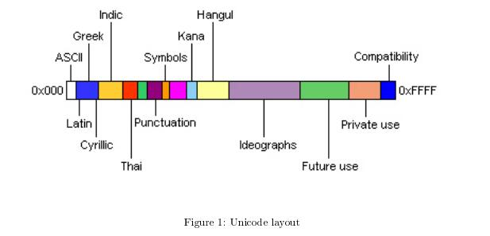
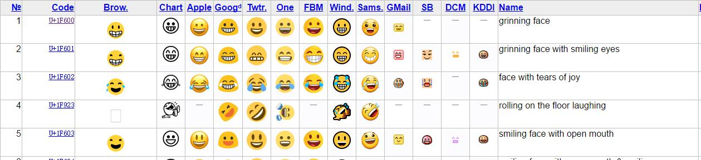

 <!DOCTYPE HTML>
<html lang="zh-CN">
<head>
  <meta charset="UTF-8">
  
    <title>Unicode历史 | KL&#39;s blog</title>
    <meta name="viewport" content="width=device-width, initial-scale=1,user-scalable=no">
    
    <meta name="author" content="Kevin Leo">
    

    
    <meta name="description" content="字符编码
字符编码（英语：Character encoding）、字集码是把字符集中的字符编码为指定集合中某一对象（例如：比特模式、自然数序列、8位组或者电脉冲），以便文本在计算机中存储和通过通信网络的传递。

简单的说，就是计算机只认0和1，于是在数据取出来的时候根据一个类似字典的东西，按照一定的规则将比特信息转换成对应的字符信息，这样人们才可以理解到底存储了什么。
ASCII编码ASCII（A">
<meta property="og:type" content="article">
<meta property="og:title" content="Unicode历史">
<meta property="og:url" content="http://qsli.github.io/2016/09/26/character-encoding/index.html">
<meta property="og:site_name" content="KL's blog">
<meta property="og:description" content="字符编码
字符编码（英语：Character encoding）、字集码是把字符集中的字符编码为指定集合中某一对象（例如：比特模式、自然数序列、8位组或者电脉冲），以便文本在计算机中存储和通过通信网络的传递。

简单的说，就是计算机只认0和1，于是在数据取出来的时候根据一个类似字典的东西，按照一定的规则将比特信息转换成对应的字符信息，这样人们才可以理解到底存储了什么。
ASCII编码ASCII（A">
<meta property="og:image" content="http://qsli.github.io/Unicode_logo.jpg">
<meta property="og:image" content="http://qsli.github.io/unicode-layout.jpg">
<meta property="og:image" content="http://qsli.github.io/emoji.jpg">
<meta property="og:updated_time" content="2016-12-18T05:21:42.639Z">
<meta name="twitter:card" content="summary">
<meta name="twitter:title" content="Unicode历史">
<meta name="twitter:description" content="字符编码
字符编码（英语：Character encoding）、字集码是把字符集中的字符编码为指定集合中某一对象（例如：比特模式、自然数序列、8位组或者电脉冲），以便文本在计算机中存储和通过通信网络的传递。

简单的说，就是计算机只认0和1，于是在数据取出来的时候根据一个类似字典的东西，按照一定的规则将比特信息转换成对应的字符信息，这样人们才可以理解到底存储了什么。
ASCII编码ASCII（A">

    
    <link rel="alternative" href="/atom.xml" title="KL&#39;s blog" type="application/atom+xml">
    
    
    <link rel="icon" href="/img/favicon.ico">
    
    
    <link rel="apple-touch-icon" href="/img/jacman.jpg">
    <link rel="apple-touch-icon-precomposed" href="/img/jacman.jpg">
    
    <link rel="stylesheet" href="/css/style.css" type="text/css">
</head>

  <body>
    <header>
      
<div>
		
			<div id="textlogo">
				<h1 class="site-name"><a href="/" title="KL&#39;s blog">KL&#39;s blog</a></h1>
				<h2 class="blog-motto">越积极，越幸运</h2>
			</div>
			<div class="navbar"><a class="navbutton navmobile" href="#" title="菜单">
			</a></div>
			<nav class="animated">
				<ul>
					<ul>
					 
						<li><a href="/">Home</a></li>
					
						<li><a href="/archives">Archives</a></li>
					
						<li><a href="/about">About</a></li>
					
					<li>
 					
					<form class="search" action="//google.com/search" method="get" accept-charset="utf-8">
						<label>Search</label>
						<input type="search" id="search" name="q" autocomplete="off" maxlength="20" placeholder="搜索" />
						<input type="hidden" name="q" value="site:qsli.github.io">
					</form>
					
					</li>
				</ul>
			</nav>			
</div>
    </header>
    <div id="container">
      <div id="main" class="post" itemscope itemprop="blogPost">
  
	<article itemprop="articleBody"> 
		<header class="article-info clearfix">
  <h1 itemprop="name">
    
      <a href="/2016/09/26/character-encoding/" title="Unicode历史" itemprop="url">Unicode历史</a>
  </h1>
  <p class="article-author">By
       
		<a href="/about" title="Kevin Leo" target="_blank" itemprop="author">Kevin Leo</a>
		
  <p class="article-time">
    <time datetime="2016-09-26T08:56:08.000Z" itemprop="datePublished"> 发表于 2016-09-26</time>
  </p>
  <p class="article-views">
    <span id="busuanzi_value_page_pv"></span>
  </p>
</header>

	<div class="article-content">
		
		<div id="toc" class="toc-article">
			<strong class="toc-title">文章目录</strong>
		
			<ol class="toc"><li class="toc-item toc-level-1"><a class="toc-link" href="#字符编码"><span class="toc-number">1.</span> <span class="toc-text">字符编码</span></a><ol class="toc-child"><li class="toc-item toc-level-2"><a class="toc-link" href="#ASCII编码"><span class="toc-number">1.1.</span> <span class="toc-text">ASCII编码</span></a></li><li class="toc-item toc-level-2"><a class="toc-link" href="#Unicode编码"><span class="toc-number">1.2.</span> <span class="toc-text">Unicode编码</span></a><ol class="toc-child"><li class="toc-item toc-level-3"><a class="toc-link" href="#Java中判断是否是中文字符"><span class="toc-number">1.2.1.</span> <span class="toc-text">Java中判断是否是中文字符</span></a></li><li class="toc-item toc-level-3"><a class="toc-link" href="#遗留的问题"><span class="toc-number">1.2.2.</span> <span class="toc-text">遗留的问题</span></a></li><li class="toc-item toc-level-3"><a class="toc-link" href="#CJK"><span class="toc-number">1.2.3.</span> <span class="toc-text">CJK</span></a></li><li class="toc-item toc-level-3"><a class="toc-link" href="#UTF-8编码"><span class="toc-number">1.2.4.</span> <span class="toc-text">UTF-8编码</span></a><ol class="toc-child"><li class="toc-item toc-level-4"><a class="toc-link" href="#8的含义"><span class="toc-number">1.2.4.1.</span> <span class="toc-text">8的含义</span></a></li><li class="toc-item toc-level-4"><a class="toc-link" href="#UTF-8和Unicode"><span class="toc-number">1.2.4.2.</span> <span class="toc-text">UTF-8和Unicode</span></a></li></ol></li><li class="toc-item toc-level-3"><a class="toc-link" href="#编码方式"><span class="toc-number">1.2.5.</span> <span class="toc-text">编码方式</span></a><ol class="toc-child"><li class="toc-item toc-level-4"><a class="toc-link" href="#字节序"><span class="toc-number">1.2.5.1.</span> <span class="toc-text">字节序</span></a></li><li class="toc-item toc-level-4"><a class="toc-link" href="#字节序用途"><span class="toc-number">1.2.5.2.</span> <span class="toc-text">字节序用途</span></a></li></ol></li></ol></li><li class="toc-item toc-level-2"><a class="toc-link" href="#emoji"><span class="toc-number">1.3.</span> <span class="toc-text">emoji</span></a></li><li class="toc-item toc-level-2"><a class="toc-link" href="#宽字符"><span class="toc-number">1.4.</span> <span class="toc-text">宽字符</span></a></li><li class="toc-item toc-level-2"><a class="toc-link" href="#参考文章"><span class="toc-number">1.5.</span> <span class="toc-text">参考文章</span></a></li></ol></li></ol>
		
		</div>
		
		<h1 id="字符编码">字符编码</h1><blockquote>
<p>字符编码（英语：Character encoding）、字集码是把字符集中的字符编码为指定集合中某一对象（例如：比特模式、自然数序列、8位组或者电脉冲），以便文本在计算机中存储和通过通信网络的传递。</p>
</blockquote>
<p>简单的说，就是计算机只认<code>0</code>和<code>1</code>，于是在数据取出来的时候根据一个类似字典的东西，按照一定的规则将比特信息转换成对应的字符信息，这样人们才可以理解到底存储了什么。</p>
<h2 id="ASCII编码">ASCII编码</h2><p><code>ASCII</code>（American Standard Code for Information Interchange） 编码是基于拉丁字母的一套编码系统。</p>
<p><code>ASCII</code>使用指定的<code>7</code> 位或<code>8</code> 位二进制数组合来表示<code>128</code> 或<code>256</code> 种可能的字符。</p>
<blockquote>
<p>ASCII的局限在于只能显示26个基本拉丁字母、阿拉伯数目字和英式标点符号，因此只能用于显示现代美国英语（而且在处理英语当中的外来词如naïve、café、élite等等时，所有重音符号都不得不去掉，即使这样做会违反拼写规则）。而EASCII虽然解决了部分西欧语言的显示问题，但对更多其他语言依然无能为力。因此现在的软件系统大多采用Unicode。</p>
</blockquote>
<p>后续有其扩展版本<code>EASCII</code>。这个扩展的版本虽然扩充了一些字符，增大了EASCII的表达能力，但是仍不能满足全球各个国家的需求。于是各个国家就自己搞了一套编码的规则，但是随着web的发展，越来越需要一套统一的编解码标准，于是Unicode应运而出。</p>
<h2 id="Unicode编码">Unicode编码</h2><p></p>
<blockquote>
<p>Unicode provides a unique number for every character,</p>
<p>no matter what the platform,</p>
<p>no matter what the program,</p>
<p>no matter what the language.</p>
</blockquote>
<p>定义：</p>
<blockquote>
<p>Unicode（中文：万国码、国际码、统一码、单一码）是计算机科学领域里的一项业界标准。它对世界上大部分的文字系统进行了整理、编码，使得电脑可以用更为简单的方式来呈现和处理文字。</p>
<p>In Unicode, a character is dened as the smallest component of a written language that has semantic value.<br>The number assigned to a character is called a <strong>code point</strong>. A code point is denoted by U+ following by a<br>hexadecimal number from 4 to 8 digits long. Most of the code points in use are 4 digits long. For example,<br><code>U+03C6</code> is the code point for the Greek character f.</p>
</blockquote>
<p></p>
<blockquote>
<p>在文字处理方面，统一码为每一个字符而非字形定义唯一的代码（即一个整数）。换句话说，统一码以一种抽象的方式（即数字）来处理字符，并将视觉上的演绎工作（例如字体大小、外观形状、字体形态、文体等）留给其他软件来处理，例如网页浏览器或是文字处理器。</p>
</blockquote>
<h3 id="Java中判断是否是中文字符">Java中判断是否是中文字符</h3><blockquote>
<p>Java判断一个字符串是否有中文一般情况是利用Unicode编码(CJK统一汉字的编码区间：0x4e00–0x9fbb)的正则来做判断，但是其实这个区间来判断中文不是非常精确，因为有些中文的标点符号比如：，。等等是不能识别的。</p>
</blockquote>
<p>具体的参见参考中的<code>Java 完美判断中文字符</code></p>
<h3 id="遗留的问题">遗留的问题</h3><blockquote>
<p>需要注意的是，Unicode只是一个符号集，它只规定了符号的二进制代码，却没有规定这个二进制代码应该如何存储。</p>
</blockquote>
<p>存储中存在的问题：</p>
<ol>
<li><p>如何区分Unicode和ASCII码？</p>
</li>
<li><p>如何存储能节省空间？</p>
</li>
</ol>
<blockquote>
<p>它们造成的结果是：</p>
<p>1）出现了Unicode的多种存储方式，也就是说有许多种不同的二进制格式，可以用来表示Unicode。</p>
<p>2）Unicode在很长一段时间内无法推广，直到互联网的出现。</p>
</blockquote>
<h3 id="CJK">CJK</h3><blockquote>
<p>Q: What does the term “CJK” mean?</p>
<p>A: It is a commonly used acronym for “Chinese, Japanese, and Korean”. The term “CJK character” generally refers to “Chinese characters”, or more specifically, the Chinese (= Han) ideographs used in the writing systems of the Chinese and Japanese languages, occasionally for Korean, and historically in Vietnam.</p>
</blockquote>
<h3 id="UTF-8编码">UTF-8编码</h3><blockquote>
<p>互联网的普及，强烈要求出现一种统一的编码方式。<strong>UTF-8就是在互联网上使用最广的一种Unicode的实现方式。</strong>其他实现方式还包括UTF-16（字符用两个字节或四个字节表示）和UTF-32（字符用四个字节表示），不过在互联网上基本不用。重复一遍，这里的关系是，UTF-8是Unicode的实现方式之一。</p>
</blockquote>
<h4 id="8的含义">8的含义</h4><blockquote>
<p>unicode在很长一段时间内无法推广，直到互联网的出现，为解决unicode如何在网络上传输的问题，于是面向传输的众多 <strong>UTF（UCS Transfer Format）标准出现了，顾名思义，UTF-8就是每次8个位传输数据，而UTF-16就是每次16个位。</strong>UTF-8就是在互联网上使用最广的一种unicode的实现方式，这是为传输而设计的编码，并使编码无国界，这样就可以显示全世界上所有文化的字符了。</p>
</blockquote>
<h4 id="UTF-8和Unicode">UTF-8和Unicode</h4><blockquote>
<p>UTF-8最大的一个特点，就是它是一种变长的编码方式。它可以使用1~4个字节表示一个符号，根据不同的符号而变化字节长度，当字符在ASCII 码的范围时，就用一个字节表示，保留了ASCII字符一个字节的编码做为它的一部分，注意的是unicode一个中文字符占2个字节，而UTF-8一个中 文字符占3个字节）。从unicode到uft-8并不是直接的对应，而是要过一些算法和规则来转换。</p>
</blockquote>
<h3 id="编码方式">编码方式</h3><blockquote>
<p>UTF-8的编码规则很简单，只有二条：</p>
<p>1）对于单字节的符号，字节的第一位设为0，后面7位为这个符号的unicode码。因此对于英语字母，UTF-8编码和ASCII码是相同的。</p>
<p>2）对于n字节的符号（n&gt;1），<strong>第一个字节的前n位都设为1，第n+1位设为0，后面字节的前两位一律设为10</strong>。剩下的没有提及的二进制位，全部为这个符号的unicode码。</p>
</blockquote>
<p>所以如果第一个字节是<code>0</code>开头的，那么就是兼容ASCII码的单字节字符；如果第一个字节是<code>1</code>开头的就是多字节字符，数一数前面有多少个<code>1</code>，就知道这个字符占了几个字节。</p>
<p>所以UTF-8编码后的二进制形式应该如下：</p>
<figure class="highlight cpp"><table><tr><td class="gutter"><pre><span class="line">1</span><br><span class="line">2</span><br><span class="line">3</span><br><span class="line">4</span><br><span class="line">5</span><br><span class="line">6</span><br><span class="line">7</span><br><span class="line">8</span><br><span class="line">9</span><br><span class="line">10</span><br><span class="line">11</span><br></pre></td><td class="code"><pre><span class="line"><span class="number">0</span>xxxxxxx <span class="number">1</span>个byte</span><br><span class="line"></span><br><span class="line"><span class="number">110</span>xxxxx <span class="number">10</span>xxxxxx <span class="number">2</span>个byte</span><br><span class="line"></span><br><span class="line"><span class="number">1110</span>xxxx <span class="number">10</span>xxxxxx <span class="number">10</span>xxxxxx <span class="number">3</span>个byte</span><br><span class="line"></span><br><span class="line"><span class="number">11110</span>xxx <span class="number">10</span>xxxxxx <span class="number">10</span>xxxxxx <span class="number">10</span>xxxxxx <span class="number">4</span>个byte</span><br><span class="line"></span><br><span class="line"><span class="number">111110</span>xx <span class="number">10</span>xxxxxx <span class="number">10</span>xxxxxx <span class="number">10</span>xxxxxx <span class="number">10</span>xxxxxx <span class="number">5</span>个byte</span><br><span class="line"></span><br><span class="line"><span class="number">111110</span>x <span class="number">10</span>xxxxxx <span class="number">10</span>xxxxxx <span class="number">10</span>xxxxxx <span class="number">10</span>xxxxxx <span class="number">10</span>xxxxxx <span class="number">6</span>个byte</span><br></pre></td></tr></table></figure>
<blockquote>
<p>The bytes <code>0xFE(11111110)</code> and <code>0xFF(11111111)</code> are never used in the UTF-8 encoding.</p>
</blockquote>
<p>这两个特殊的字节被用来标示是大端编码和小端编码</p>
<p>UTF-8编码的范围和Unicode对应的关系如下：</p>
<table>
<thead>
<tr>
<th>总比特数</th>
<th>Code Point占的位数</th>
<th>范围</th>
</tr>
</thead>
<tbody>
<tr>
<td>1</td>
<td>7</td>
<td>00000000 - 0000007F</td>
</tr>
<tr>
<td>2</td>
<td>11</td>
<td>00000080 - 000007FF</td>
</tr>
<tr>
<td>3</td>
<td>16</td>
<td>00000800 - 0000FFFF</td>
</tr>
<tr>
<td>4</td>
<td>21</td>
<td>00001000 - 001FFFFF</td>
</tr>
<tr>
<td>5</td>
<td>26</td>
<td>00200000 - 03FFFFFF</td>
</tr>
<tr>
<td>6</td>
<td>31</td>
<td>04000000 - FFFFFFFF</td>
</tr>
</tbody>
</table>
<p>编码示例：</p>
<p><code>U+05E7</code> 使用<code>UTF-8</code>编码示例:</p>
<ol>
<li><p>查上表得知， <code>05E7</code>在 <code>0080 - 07FF</code> 范围内，总共占2个字节<br>应该是类似 <code>110xxxxx 10xxxxxx</code></p>
</li>
<li><p>将其写成二进制形式，<code>0000 0101 1110 0111</code></p>
</li>
<li><p>将数据替换上述的<code>x</code>，得到 <code>11010111 10100111 = 0xD7A7</code></p>
</li>
</ol>
<h4 id="字节序">字节序</h4><p>UTF-8最多使用6个byte表示一个字符，于是就存在一个字节序的问题。<br>字节序分为两种：</p>
<ol>
<li><strong>Little-Endian</strong>:<br>字节序低位在前  小尾 在操作系统上很常用，也是计算机系统上最常用的字节序</li>
<li><strong>Big-Endian</strong>: 字节序高位在前 大尾  也称为网络字节序</li>
</ol>
<figure class="highlight cpp"><table><tr><td class="gutter"><pre><span class="line">1</span><br><span class="line">2</span><br><span class="line">3</span><br></pre></td><td class="code"><pre><span class="line"><span class="number">16</span>进制数字<span class="number">0x12345678</span>，little-endian的存储为:  <span class="number">0x78</span> <span class="number">0x56</span> <span class="number">0x34</span> <span class="number">0x12</span>     地址依次为<span class="number">100</span>, <span class="number">101</span>, <span class="number">102</span>, <span class="number">103</span></span><br><span class="line"></span><br><span class="line"><span class="number">16</span>进制数字<span class="number">0x12345678</span>，big-endian的存储为:     <span class="number">0x12</span> <span class="number">0x34</span> <span class="number">0x56</span> <span class="number">0x78</span>       地址依次为<span class="number">100</span>, <span class="number">101</span>, <span class="number">102</span>, <span class="number">103</span></span><br></pre></td></tr></table></figure>
<blockquote>
<p>“endian”这个词出自《格列佛游记》。小人国的内战就源于吃鸡蛋时是究竟从大头(Big-Endian)敲开还是从小头(Little-Endian)敲开，由此曾发生过六次叛乱，其中一个皇帝送了命，另一个丢了王位。</p>
</blockquote>
<h4 id="字节序用途">字节序用途</h4><blockquote>
<p>Little-Endian最常用，大部分用户的操作系统（如windows, FreeBsd,Linux）是Little Endian的。</p>
<p>Big-Endian最常用在网络协议上，例如TCP/IP协议使用的是big endian. 操作系统上如MAC OS ,是Big Endian 的。<br>本质上说，Little Endian还是Big Endian与操作系统和芯片类型都有关系。PowerPC系列采用big endian方式存储数据，x86系列则采用little endian方式存储数据。</p>
</blockquote>
<figure class="highlight gherkin"><table><tr><td class="gutter"><pre><span class="line">1</span><br><span class="line">2</span><br><span class="line">3</span><br><span class="line">4</span><br><span class="line">5</span><br><span class="line">6</span><br><span class="line">7</span><br><span class="line">8</span><br><span class="line">9</span><br><span class="line">10</span><br><span class="line">11</span><br><span class="line">12</span><br></pre></td><td class="code"><pre><span class="line">Big Endian</span><br><span class="line">   低地址                                           高地址</span><br><span class="line">   -----------------------------------------&gt;</span><br><span class="line">   +-+-+-+-+-+-+-+-+-+-+-+-+-+-+-+-+-+-+</span><br><span class="line">   |<span class="string">     12     </span>|<span class="string">      34    </span>|<span class="string">     56      </span>|<span class="string">     78    </span>|</span><br><span class="line">   +-+-+-+-+-+-+-+-+-+-+-+-+-+-+-+-+-+-+</span><br><span class="line"></span><br><span class="line">Little Endian</span><br><span class="line">   低地址                                           高地址</span><br><span class="line">   -----------------------------------------&gt;</span><br><span class="line">   +-+-+-+-+-+-+-+-+-+-+-+-+-+-+-+-+-+-+</span><br><span class="line">   |<span class="string">     78     </span>|<span class="string">      56    </span>|<span class="string">     34      </span>|<span class="string">     12    </span>|</span><br></pre></td></tr></table></figure>
<blockquote>
<p>Unicode规范中定义，每一个文件的最前面分别加入一个表示编码顺序的字符，这个字符的名字叫做”零宽度非换行空格”（ZERO WIDTH NO-BREAK SPACE），用FEFF表示。这正好是两个字节，而且FF比FE大1。<br>如果一个文本文件的头两个字节是FE FF，就表示该文件采用大头方式；如果头两个字节是FF FE，就表示该文件采用小头方式。</p>
</blockquote>
<h2 id="emoji">emoji</h2><p></p>
<p>emoji表情采用的是 Unicode编码，Emoji就是一种在Unicode位于<code>\u1F601-\u1F64F</code>区段的字符。这个显然超过了目前常用的UTF-8字符集的编码范围<code>\u0000-\uFFFF</code>。</p>
<p>使用utf8mb4编码便可以解决上述的问题</p>
<h2 id="宽字符">宽字符</h2><p>宽字符（Wide character） 是程序设计的术语。它是一个抽象的术语（没有规定具体实现细节），用以表示比8位字符还宽的数据类型。它不同于Unicode。</p>
<p>wchar_t在ANSI/ISO C中是一个数据类型，且某些其它的编程语言也用它来表示宽字符。</p>
<h2 id="参考文章">参考文章</h2><ol>
<li><p><a href="https://zh.wikipedia.org/wiki/%E5%AD%97%E7%AC%A6%E7%BC%96%E7%A0%81" target="_blank" rel="external">字符编码</a></p>
</li>
<li><p><a href="https://github.com/acmerfight/insight_python/blob/master/Unicode_and_Character_Sets.md" target="_blank" rel="external">Unicode_and_Character_Sets.md</a></p>
</li>
<li><p><a href="http://www.compsci.hunter.cuny.edu/~sweiss/resources/Unicode.pdf" target="_blank" rel="external">Unicode and UTF-8</a></p>
</li>
<li><p><a href="http://www.micmiu.com/lang/java/java-check-chinese/" target="_blank" rel="external">Java 完美判断中文字符</a></p>
</li>
<li><p><a href="http://unicode.org/emoji/charts/full-emoji-list.html" target="_blank" rel="external">Full Emoji Data, v3.0</a></p>
</li>
<li><p><a href="http://www.tuicool.com/articles/aQBVny" target="_blank" rel="external">微信emoji表情编码</a></p>
</li>
<li><p><a href="http://blog.csdn.net/sunshine1314/article/details/2309655" target="_blank" rel="external">关于Big Endian 和 Little Endian</a></p>
</li>
<li><p><a href="http://www.ruanyifeng.com/blog/2007/10/ascii_unicode_and_utf-8.html" target="_blank" rel="external">字符编码笔记：ASCII，Unicode和UTF-8</a></p>
</li>
</ol>
  
	</div>
		<footer class="article-footer clearfix">
<div class="article-catetags">

<div class="article-categories">
  <span></span>
  <a class="article-category-link" href="/categories/base/">base</a>
</div>


  <div class="article-tags">
  
  <span></span> <a href="/tags/编码/">编码</a>
  </div>

</div>


	<div class="article-share" id="share">
	
	  <div data-url="http://qsli.github.io/2016/09/26/character-encoding/" data-title="Unicode历史 | KL&#39;s blog" data-tsina="null" class="share clearfix">
	  </div>
	
	</div>


</footer>

   	       
	</article>
	
<nav class="article-nav clearfix">
 
 <div class="prev" >
 <a href="/2016/09/27/postgre/" title="Postgre数据库简介">
  <strong>上一篇：</strong><br/>
  <span>
  Postgre数据库简介</span>
</a>
</div>


<div class="next">
<a href="/2016/09/26/base64/"  title="Base64编码原理">
 <strong>下一篇：</strong><br/> 
 <span>Base64编码原理
</span>
</a>
</div>

</nav>

	
<section id="comments" class="comment">
	<div class="ds-thread" data-thread-key="2016/09/26/character-encoding/" data-title="Unicode历史" data-url="http://qsli.github.io/2016/09/26/character-encoding/"></div>
</section>


</div>  
      <div class="openaside"><a class="navbutton" href="#" title="显示侧边栏"></a></div>

<div id="asidepart">
<div class="closeaside"><a class="closebutton" href="#" title="隐藏侧边栏"></a></div>
<aside class="clearfix">

  
<div class="github-card">
<p class="asidetitle">Github 名片</p>
<div class="github-card" data-github="qsLI" data-width="220" data-height="119" data-theme="medium">
<script type="text/javascript" src="//cdn.jsdelivr.net/github-cards/latest/widget.js" ></script>
</div>
  </div>


  
<div class="categorieslist">
	<p class="asidetitle">分类</p>
		<ul>
		
		  
			<li><a href="/categories/base/" title="base">base<sup>6</sup></a></li>
		  
		
		  
			<li><a href="/categories/fe/" title="fe">fe<sup>1</sup></a></li>
		  
		
		  
			<li><a href="/categories/hexo/" title="hexo">hexo<sup>2</sup></a></li>
		  
		
		  
			<li><a href="/categories/idea/" title="idea">idea<sup>1</sup></a></li>
		  
		
		  
			<li><a href="/categories/java/" title="java">java<sup>3</sup></a></li>
		  
		
		  
			<li><a href="/categories/linux/" title="linux">linux<sup>5</sup></a></li>
		  
		
		  
			<li><a href="/categories/python/" title="python">python<sup>1</sup></a></li>
		  
		
		  
			<li><a href="/categories/python-linux/" title="python linux">python linux<sup>1</sup></a></li>
		  
		
		  
			<li><a href="/categories/spring/" title="spring">spring<sup>6</sup></a></li>
		  
		
		  
			<li><a href="/categories/tomcat/" title="tomcat">tomcat<sup>2</sup></a></li>
		  
		
		  
			<li><a href="/categories/web/" title="web">web<sup>1</sup></a></li>
		  
		
		  
			<li><a href="/categories/机器学习/" title="机器学习">机器学习<sup>1</sup></a></li>
		  
		
		</ul>
</div>


  
<div class="tagslist">
	<p class="asidetitle">标签</p>
		<ul class="clearfix">
		
			
				<li><a href="/tags/spring-mvc/" title="spring mvc">spring mvc<sup>2</sup></a></li>
			
		
			
				<li><a href="/tags/mysql/" title="mysql">mysql<sup>2</sup></a></li>
			
		
			
				<li><a href="/tags/shell/" title="shell">shell<sup>2</sup></a></li>
			
		
			
				<li><a href="/tags/编码/" title="编码">编码<sup>2</sup></a></li>
			
		
			
				<li><a href="/tags/机器学习/" title="机器学习">机器学习<sup>1</sup></a></li>
			
		
			
				<li><a href="/tags/spi/" title="spi">spi<sup>1</sup></a></li>
			
		
			
				<li><a href="/tags/shadowsocks/" title="shadowsocks">shadowsocks<sup>1</sup></a></li>
			
		
			
				<li><a href="/tags/re/" title="re">re<sup>1</sup></a></li>
			
		
			
				<li><a href="/tags/python-util/" title="python-util">python-util<sup>1</sup></a></li>
			
		
			
				<li><a href="/tags/placeholder/" title="placeholder">placeholder<sup>1</sup></a></li>
			
		
			
				<li><a href="/tags/postgresql/" title="postgresql">postgresql<sup>1</sup></a></li>
			
		
			
				<li><a href="/tags/uml/" title="uml">uml<sup>1</sup></a></li>
			
		
			
				<li><a href="/tags/ssh/" title="ssh">ssh<sup>1</sup></a></li>
			
		
			
				<li><a href="/tags/netcat/" title="netcat">netcat<sup>1</sup></a></li>
			
		
			
				<li><a href="/tags/access-log/" title="access-log">access-log<sup>1</sup></a></li>
			
		
			
				<li><a href="/tags/ajax/" title="ajax">ajax<sup>1</sup></a></li>
			
		
			
				<li><a href="/tags/Javadoc/" title="Javadoc">Javadoc<sup>1</sup></a></li>
			
		
			
				<li><a href="/tags/访问权限/" title="访问权限">访问权限<sup>1</sup></a></li>
			
		
			
				<li><a href="/tags/exception/" title="exception">exception<sup>1</sup></a></li>
			
		
			
				<li><a href="/tags/jackson/" title="jackson">jackson<sup>1</sup></a></li>
			
		
		</ul>
</div>


  <div class="linkslist">
  <p class="asidetitle">友情链接</p>
    <ul>
        
          <li>
            
            	<a href="https://chenyuzuoo.github.io/" target="_blank" title="Chenyu&#39;s Script">Chenyu&#39;s Script</a>
            
          </li>
        
    </ul>
</div>

  


  <div class="rsspart">
	<a href="/atom.xml" target="_blank" title="rss">RSS 订阅</a>
</div>

  <div class="linkslist">
    <ul>
        <li>
            <span id="busuanzi_container_site_pv">
          本站总访问量:<span id="busuanzi_value_site_pv"></span>次
            </span>
        </li>
        <li>
            <span id="busuanzi_container_site_uv">
      本站访客数:<span id="busuanzi_value_site_uv"></span>人次
            </span>
        </li>
    </ul>
</div>


</aside>
</div>
    </div>
    <footer><div id="footer" >
		<script async src="https://dn-lbstatics.qbox.me/busuanzi/2.3/busuanzi.pure.mini.js"></script>
		<p class="copyright">
		Powered by <a href="http://hexo.io" target="_blank" title="hexo">hexo</a> and Theme by <a href="https://github.com/wuchong/jacman" target="_blank" title="Jacman">Jacman</a> © 2016 
		
		<a href="/about" target="_blank" title="Kevin Leo">Kevin Leo</a>
						
		</p>		
</div>
</footer>
    <script src="/js/jquery-2.0.3.min.js"></script>
<script src="/js/jquery.imagesloaded.min.js"></script>
<script src="/js/gallery.js"></script>
<script src="/js/jquery.qrcode-0.12.0.min.js"></script>

<script type="text/javascript">
$(document).ready(function(){ 
  $('.navbar').click(function(){
    $('header nav').toggleClass('shownav');
  });
  var myWidth = 0;
  function getSize(){
    if( typeof( window.innerWidth ) == 'number' ) {
      myWidth = window.innerWidth;
    } else if( document.documentElement && document.documentElement.clientWidth) {
      myWidth = document.documentElement.clientWidth;
    };
  };
  var m = $('#main'),
      a = $('#asidepart'),
      c = $('.closeaside'),
      o = $('.openaside');
  c.click(function(){
    a.addClass('fadeOut').css('display', 'none');
    o.css('display', 'block').addClass('fadeIn');
    m.addClass('moveMain');
  });
  o.click(function(){
    o.css('display', 'none').removeClass('beforeFadeIn');
    a.css('display', 'block').removeClass('fadeOut').addClass('fadeIn');      
    m.removeClass('moveMain');
  });
  $(window).scroll(function(){
    o.css("top",Math.max(80,260-$(this).scrollTop()));
  });
  
        getSize();
        if (myWidth >= 1024) {
          c.click();
        }
  
  $(window).resize(function(){
    getSize(); 
    if (myWidth >= 1024) {
      $('header nav').removeClass('shownav');
    }else{
      m.removeClass('moveMain');
      a.css('display', 'block').removeClass('fadeOut');
      o.css('display', 'none');
        
    }
  });
});
</script>

<script type="text/javascript">
$(document).ready(function(){ 
  var ai = $('.article-content>iframe'),
      ae = $('.article-content>embed'),
      t  = $('#toc'),
      ta = $('#toc.toc-aside'),
      o  = $('.openaside'),
      c  = $('.closeaside');
  if(ai.length>0){
    ai.wrap('<div class="video-container" />');
  };
  if(ae.length>0){
   ae.wrap('<div class="video-container" />');
  };
  c.click(function(){
    ta.css('display', 'block').addClass('fadeIn');
  });
  o.click(function(){
    ta.css('display', 'none');
  });
  $(window).scroll(function(){
    ta.css("top",Math.max(140,320-$(this).scrollTop()));
  });
});
</script>


<script type="text/javascript">
$(document).ready(function(){ 
  var $this = $('.share'),
      url = $this.attr('data-url'),
      encodedUrl = encodeURIComponent(url),
      title = $this.attr('data-title'),
      tsina = $this.attr('data-tsina'),
      description = $this.attr('description');
  var html = [
  '<div class="hoverqrcode clearfix"></div>',
  '<a class="overlay" id="qrcode"></a>',
  '<a href="https://www.facebook.com/sharer.php?u=' + encodedUrl + '" class="article-share-facebook" target="_blank" title="Facebook"></a>',
  '<a href="https://twitter.com/intent/tweet?url=' + encodedUrl + '" class="article-share-twitter" target="_blank" title="Twitter"></a>',
  '<a href="#qrcode" class="article-share-qrcode" title="微信"></a>',
  '<a href="http://widget.renren.com/dialog/share?resourceUrl=' + encodedUrl + '&srcUrl=' + encodedUrl + '&title=' + title +'" class="article-share-renren" target="_blank" title="人人"></a>',
  '<a href="http://service.weibo.com/share/share.php?title='+title+'&url='+encodedUrl +'&ralateUid='+ tsina +'&searchPic=true&style=number' +'" class="article-share-weibo" target="_blank" title="微博"></a>',
  '<span title="Share to"></span>'
  ].join('');
  $this.append(html);

  $('.hoverqrcode').hide();

  var myWidth = 0;
  function updatehoverqrcode(){
    if( typeof( window.innerWidth ) == 'number' ) {
      myWidth = window.innerWidth;
    } else if( document.documentElement && document.documentElement.clientWidth) {
      myWidth = document.documentElement.clientWidth;
    };
    var qrsize = myWidth > 1024 ? 200:100;
    var options = {render: 'image', size: qrsize, fill: '#2ca6cb', text: url, radius: 0.5, quiet: 1};
    var p = $('.article-share-qrcode').position();
    $('.hoverqrcode').empty().css('width', qrsize).css('height', qrsize)
                          .css('left', p.left-qrsize/2+20).css('top', p.top-qrsize-10)
                          .qrcode(options);
  };
  $(window).resize(function(){
    $('.hoverqrcode').hide();
  });
  $('.article-share-qrcode').click(function(){
    updatehoverqrcode();
    $('.hoverqrcode').toggle();
  });
  $('.article-share-qrcode').hover(function(){}, function(){
      $('.hoverqrcode').hide();
  });
});   
</script>


<script type="text/javascript">
  var duoshuoQuery = {short_name:"dr0p"};
  (function() {
    var ds = document.createElement('script');
    ds.type = 'text/javascript';ds.async = true;
    ds.src = '//static.duoshuo.com/embed.js';
    ds.charset = 'UTF-8';
    (document.getElementsByTagName('head')[0] 
    || document.getElementsByTagName('body')[0]).appendChild(ds);
  })();
</script> 


<link rel="stylesheet" href="/fancybox/jquery.fancybox.css" media="screen" type="text/css">
<script src="/fancybox/jquery.fancybox.pack.js"></script>
<script type="text/javascript">
$(document).ready(function(){ 
  $('.article-content').each(function(i){
    $(this).find('img').each(function(){
      if ($(this).parent().hasClass('fancybox')) return;
      var alt = this.alt;
      if (alt) $(this).after('<span class="caption">' + alt + '</span>');
      $(this).wrap('<a href="' + this.src + '" title="' + alt + '" class="fancybox"></a>');
    });
    $(this).find('.fancybox').each(function(){
      $(this).attr('rel', 'article' + i);
    });
  });
  if($.fancybox){
    $('.fancybox').fancybox();
  }
}); 
</script>


<!-- Analytics Begin -->


<script>
var _hmt = _hmt || [];
(function() {
  var hm = document.createElement("script");
  hm.src = "//hm.baidu.com/hm.js?b86170f998d4ba7d7e834894b1f02595";
  var s = document.getElementsByTagName("script")[0]; 
  s.parentNode.insertBefore(hm, s);
})();
</script>


<!-- Analytics End -->

<!-- Totop Begin -->

	<div id="totop">
	<a title="返回顶部"></a>
	</div>
	<script src="/js/totop.js"></script>

<!-- Totop End -->

<!-- MathJax Begin -->
<!-- mathjax config similar to math.stackexchange -->


<!-- MathJax End -->

<!-- Tiny_search Begin -->

<!-- Tiny_search End -->

  </body>
</html>
